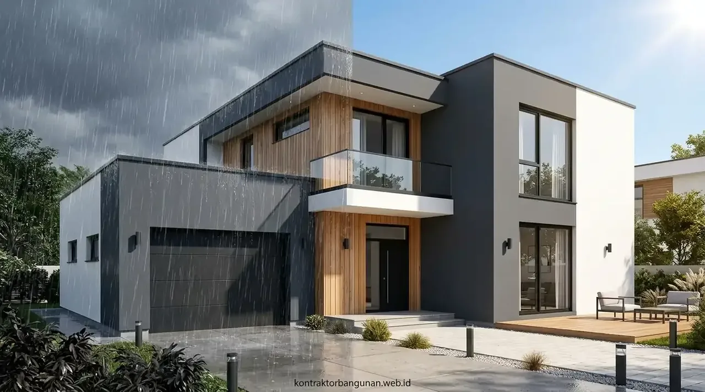

1. Mengapa Cat Eksterior Memerlukan Spesifikasi Khusus Dibanding Cat Interior?
Cat tembok eksterior dirancang dengan polimer khusus anti-UV, ketahanan air tinggi (water repellent), dan formula anti-jamur guna menahan fluktuasi cuaca ekstrem.
Berdasarkan riset Pusat Studi Material Bangunan & Iklim Tropis 2024/2025, sebanyak 64,2% kerusakan fasad dinding di wilayah tropis bermula dari pemakaian cat yang tidak mengandung aditif tahan alkali atau pemaksaan pemakaian cat interior pada dinding luar. Sinar ultraviolet berenergi tinggi dapat memecah ikatan polimer organik cat standar, menyebabkan warna memudar dalam waktu kurang dari 12 bulan serta memicu pengapuran (chalking).
Dengan mengaplikasikan cat eksterior kelas profesional yang direkomendasikan oleh Kontraktor Bangunan, dinding bangunan terlindungi dari penyerapan air hujan (hidrofobik) sekaligus memiliki sifat breathable yang memungkinkan uap air dari dalam dinding keluar tanpa merusak lapisan cat.
- Ukur Kelembapan Dinding: Pastikan tingkat kelembapan dinding di bawah 14% (menggunakan alat moisture meter) sebelum pelapisan primer.
- Uji Kadar Alkali Semen: pH dinding harus berada di kisaran 7-8; jangan mengecat plesteran baru yang belum melewati masa curing minimal 21-28 hari.
- Tutup Retak Rambut: Gunakan sealant akrilik atau wall filler elastis khusus luar ruangan sebelum pengecatan dasar.
2. Apa Perbedaan Formula Cat Weathershield vs Cat Biasa Konvensional?
Cat weathershield berbahan dasar 100% akrilik murni dengan teknologi pigmen reflektif panas, sedangkan cat biasa berbasis kalsium yang mudah mengapur dan pudar.
Kunci keunggulan cat berlabel Weathershield atau Weathergard terletak pada ikatan polimer akrilik yang sangat padat. Formula ini menciptakan lapisan pelindung seperti karet tipis (elastomeric coating) yang dapat memuai dan menyusut mengikuti pergerakan termal struktur bangunan saat terkena terik matahari siang hari dan dinginnya malam hari.
Sebaliknya, cat konvensional umumnya mengandalkan bahan pengisi (filler) kalsium karbonat tinggi dengan kadar resin rendah. Akibatnya, saat terkena hujan deras berulang kali, lapisan tersebut akan tergerus dan menyerap air, menjadi sarang spora lumut hitam yang merusak estetika rumah.
3. Bagaimana Cara Memilih Merk Cat Eksterior Terbaik Berdasarkan Kebutuhan Fasad?
Pemilihan merk cat terbaik mempertimbangkan daya tutup (opacity), elastisitas terhadap muai susut beton, garansi ketahanan (5-10 tahun), dan kemudahan dibersihkan.
Setiap produsen cat ternama di Indonesia menawarkan formula unggulan dengan kelebihan masing-masing:
- Kategori Ultra-Premium (Elastomeric & Heat Reflective): Mampu memantulkan panas inframerah matahari sehingga menurunkan suhu dinding hingga 3-5°C dan menutup retak rambut hingga 2 mm. Sangat ideal untuk dinding luar lantai 2 dan fasad terpapar matahari barat.
- Kategori Premium Weathershield: Menawarkan daya tahan warna hingga 8 tahun dengan teknologi anti-dirt pick up yang membuat debu mudah luntur saat terkena air hujan (self-cleaning effect).
- Kategori Standard Acrylic: Pilihan ekonomis untuk dinding samping atau pagar dengan perlindungan cuaca standar 3-5 tahun.

Kombinasi cat primer alkali sealer dan dua lapis top coat weathershield menghasilkan warna rata, elegan, dan tahan terhadap iklim tropis basah.
4. Tabel Perbandingan Merk dan Spesifikasi Cat Eksterior Premium
Tabel komparasi teknis berikut merangkum spesifikasi kunci formula cat dinding luar untuk membantu Anda menentukan alokasi material yang paling efisien.
| Parameter Karakteristik | Cat Eksterior Ultra-Premium | Cat Weathershield Premium | Cat Eksterior Standar |
|---|---|---|---|
| Jenis Bahan Pengikat (Binder) | 100% Full Acrylic Elastomeric | Modified Pure Acrylic Resin | Styrene Acrylic Emulsion |
| Kemampuan Tutup Retak Rambut | Sangat Tinggi (hingga 2,0 mm) | Sedang (hingga 0,8 mm) | Rendah (< 0,2 mm) |
| Ketahanan Sinar UV & Warna | 8 – 10 Tahun (UV-Reflective) | 5 – 8 Tahun | 2 – 3 Tahun |
| Ketahanan Jamur & Lumut | Advanced Bioside Anti-Algae | Standard Anti-Fungus Guard | Minimal |
| Fitur Self-Cleaning (Anti Debu) | Ya (Debu luntur bersama hujan) | Ya (Permukaan semi-kilap licin) | Tidak (Debu mudah menempel) |
| Rekomendasi Area Aplikasi | Fasad utama, dak beton, lantai atas | Dinding luar rumah tinggal, ruko | Dinding pembatas samping & pagar |
5. Berapa Tahapan Aplikasi Pengecatan Eksterior yang Benar Agar Tidak Mengelupas?
Aplikasi yang benar mencakup pembersihan substrat beton, pengeringan kadar air di bawah 14%, pelapisan alkali resisting primer, dan dua lapis top coat.
Bahkan cat termahal sekalipun akan mengelupas dalam beberapa bulan jika teknik pengaplikasiannya salah. Urutan standar profesional yang diterapkan tim teknis kami meliputi:
- Pembersihan & Pengikisan: Bersihkan dinding dari debu, minyak, lumut lama dengan kape dan water jet cleaner.
- Perbaikan Dinding: Tambal retak rambut menggunakan wall putty elastis tahan cuaca, bukan plamir gipsum interior yang rentan larut air.
- Aplikasi Cat Dasar (Primer): Kuaskan 1 lapis Alkali Resisting Primer berkualitas untuk mengunci garam semen dan memaksimalkan daya lekat cat warna.
- Pengecatan Akhir (Top Coat): Aplikasikan 2 hingga 3 lapis cat finishing eksterior dengan jeda waktu pengeringan minimal 2 jam antar lapisan.
6. Mengapa Pemilihan Jasa Pengecatan Profesional Berpengaruh pada Ketahanan Cat?
Tenaga ahli profesional mengukur kelembapan dinding dengan moisture meter, menggunakan alat semprot/rol presisi, dan menjamin ketebalan mikron cat merata.
Pekerjaan cat di ketinggian fasad lantai 2 atau dinding luar ruko memerlukan perancah (scaffolding) berstandar K3, teknik pengenceran air yang presisi (sesuai technical data sheet pabrik yaitu 5-10%), serta pengawasan ketebalan lapisan film (Dry Film Thickness / DFT).
Pengecatan yang terlalu encer akan menurunkan daya proteksi UV dan daya tahan gesek, sedangkan pengecatan saat dinding basah akan memicu gelembung air (blistering) di bawah cat.
7. Konsultasi Pengadaan Material Cat Berkualitas Bersama Kontraktor Bangunan
Kontraktor Bangunan menyediakan pengadaan cat tembok eksterior original langsung dari distributor resmi serta jasa pengerjaan fasad bergaransi.
Kami membantu Anda memilih paduan warna yang elegan, menghitung kebutuhan galon/pail cat secara akurat tanpa sisa terbuang, dan mengeksekusi pengecatan menggunakan peralatan berstandar industri.
Dapatkan katalog warna terlengkap dan penawaran paket pengerjaan cat fasad terbaik sekarang: Unduh Katalog Material & Konsultasi Cat Eksterior Gratis.
Pertanyaan yang Sering Diajukan (FAQ)
Kesimpulan Praktis
Memilih cat tembok eksterior tahan cuaca dengan spesifikasi 100% elastomeric acrylic dan perlindungan UV adalah keputusan investasi jangka panjang yang menghemat biaya pemeliharaan fasad rumah hingga bertahun-tahun ke depan. Kunci ketahanan warna terletak pada perpaduan kualitas material bergaransi dan standar aplikasi plesteran/sealer yang presisi.
Wujudkan tampilan fasad bangunan yang megah, bersih, dan tahan terhadap segala cuaca bersama tim Kontraktor Bangunan.